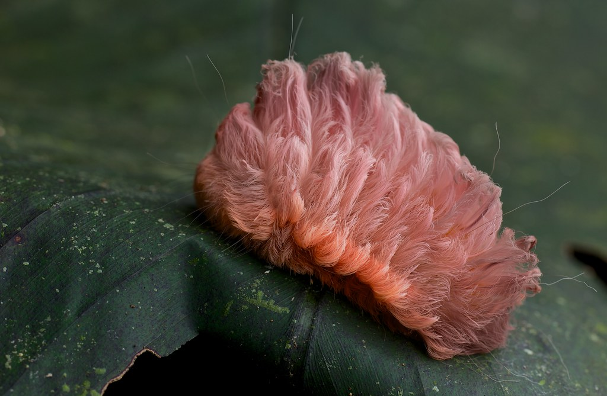
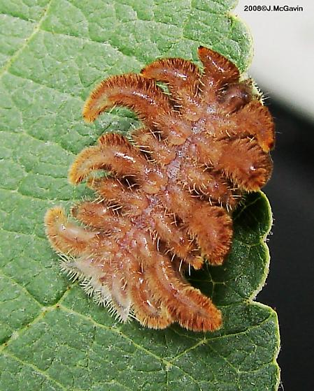
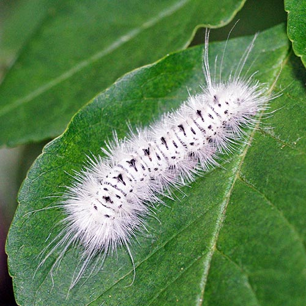
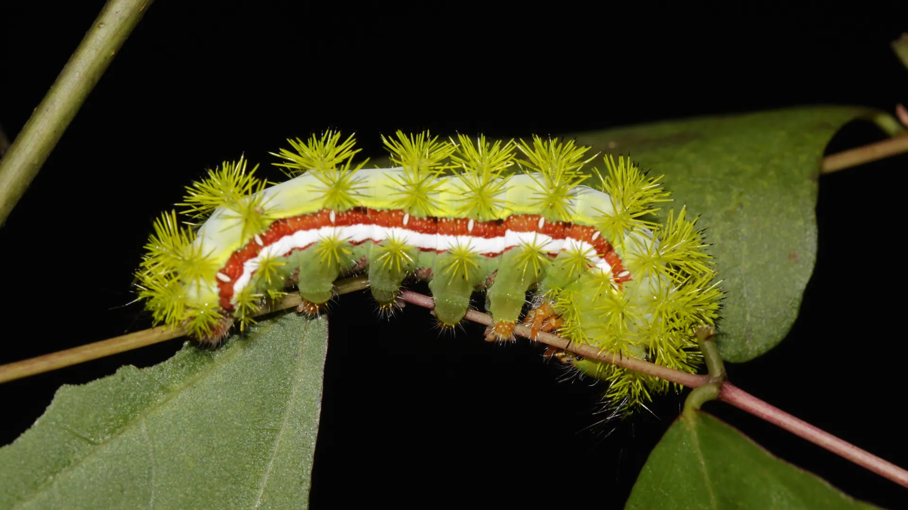
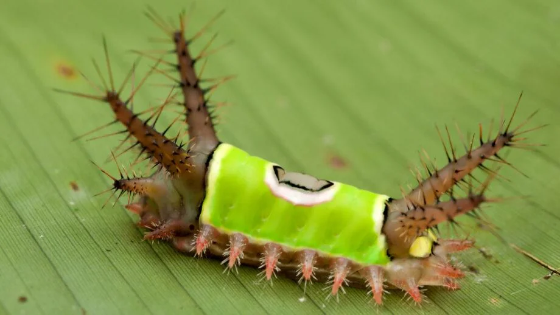
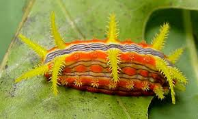

| Buck Moth Caterpillar |
High |
Commonly found in oak forests. They have hollow spines that
contain venom, which cause a painful sting upon contact. The
sting itself can cause immediate pain, itching, swelling,
redness, and in some cases allergic reaction.
|

|
| Flannel Moth Caterpillar |
Very High |
Very cute and soft looking but a sting from a flannel moth
caterpillar is considered one of the most painful in North
America. Its venomous spines are hidden within its furry
exterior. Symptoms range from itching, burning, and swelling
to more severe reactions like headaches and nausea. In some
cases it can cause shock and respiratory distress.
|

|
| Hag Moth Caterpillar |
High |
This caterpillar can be found in forests trees and ornamental
shrubs. It's not as common as other caterpillars. Most common
symptoms is itching and burning sensation, while others can
experience breathing difficulty, nausea and pain that can last
several hours.
|

|
| Hickory Tussock |
Moderate |
Symptoms are typically like poison ivy, redness, itching,
burning sensation. Life threatening reactions are rare but can
still happen. Their fluffy appearance hides hollow hairs that
inject toxins at contact.
|

|
| Io Moth Caterpillar |
Moderate |
Stings are caused by its spines which are like tiny needles
that inject venom. This sting can cause immediate burning
sensation, pain, itching, redness, and swelling. Rare cases
also have severe reactions like nausea, headaches, fevers, and
shortness of breath.
|

|
| Saddleback Caterpillar |
High |
Immediate burning pain, followed by redness, swelling, and a
rash of red welts awaits you if you ever get stung by a
saddleback caterpillar. Other symptoms can include pain
spreading to nearby lymph nodes, and itching. More severe
cases can have reactions like headaches, gastrointestinal
issues, or a potential life-threatening anaphylactic reaction.
|

|
| Stinging Rose Caterpillar |
Medium |
Very pretty and bright colors. This caterpillar has venomous
spines which cause a painful reaction when touched. People
should be careful as this caterpillar can be found in apples.
roses, and oaks.
|

|